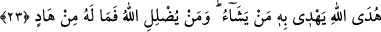

beğenilmeyen huylardan temizlensin ve vera yoluna girsin. Sonra onun fuâdına nazar
eder ve onu halktan ve dünya ilişkilerinden keser. Onun gönlüne ilim ve hikmet pınarı
açar. Hidayet nurunu onun gönlünün hediyesi kılar. Şöyle buyurur: “O, Rabbinden bir
nûr üzerindedir.” Sonra onun şegâf’ına nazar eder. Onu su ve topraklıktan çıkartır, fenâ
mahallesine kor.
Nur üç kısımdır: Biri dilde, diğeri gönülde, bir diğeri de tendedir. Dilin nuru tevhîd
ve şehâdettir. Tenin nuru hizmet ve tâattir. Gönlün nuru ise şevk ve muhabbettir. Dilin
nuru cennete ulaştırır. Hak Teâlâ şöyle buyurur: “Söyledikleri (bu) sözden dolayı Allah
onlara, içinde devamlı kalmak üzere, zemininden ırmaklar akan cennetleri
mükâfat olarak verdi.” (el-Mâide, 5/85)
Tenin nuru Firdevs’e ulaştırır. Hak Teâlâ şöyle buyurur: “Îman edip iyi
davranışlarda bulunanlara gelince, onlar için makam olarak Firdevs cennetleri
vardır.” (el-Kehf, 18/107)
Gönül nuru dosta kavuşmaya/likâ ulaştırır. Hak Teâlâ şöyle buyurur: “Yüzler vardır
ki, o gün ışıl ışıl parıldayacaktır. Rablerine bakacaklardır.” (el-Kıyâme, 22-23).
Bir hadiste şöyle buyrulmuştur: “Nimet ehlinin düşmanları vardır, öyleyse onlardan
sakının.”[98] Bazıları der ki: Kula bahşedilmiş en büyük nimet İslâm nimetidir. Bunun
düşmanı ise İblis’tir. Gerek bu nimeti gerekse diğer nimetleri muhâfaza et. Unutmaktan,
kalb katılığından ve nankörlükten sakın!
(Ebü’l-)Hüseyn Nûrî (r.h.) der ki: “Kalblerin nimetler yüzünden katılaşması, sıkıntı
çekmekten dolayı katılaşmasından daha kötüdür. Çünkü, nimet ile sükûnete erersin,
sıkıntı olunca Allah’ı anarsın.” Yine o şöyle der: “İlmin mübah kıldığı bir şeyin peşinde
sırf zevk almak için koşan, ömrü hebâ etme ve kalb katılığı cezâsına dûçar edilir.”
Öyleyse ömrünü israf eden, vaktini zâyi eden, göğüsleri açılanların mertebelerine
ulaşamayan ve kalbi katılarla birlikte kalan kendisi için ağlasın. Allah’ım! Senden bizi
muhâfaza edip korumanı niyaz ediyoruz!
23. Allah sözün en güzelini, birbiriyle uyumlu ve bıkılmadan tekrar tekrar okunan
bir kitap olarak indirdi. Rablerinden korkanların, bu Kitab’ın etkisinden tüyleri
ürperir, derken hem bedenleri ve hem de gönülleri Allah’ın zikrine ısınıp yumuşar.
İşte bu Kitap, Allah’ın, dilediğini kendisiyle doğru yola ilettiği hidayet rehberidir.
Allah kimi de saptırırsa artık ona yol gösteren olmaz.